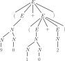
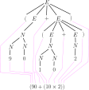
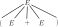
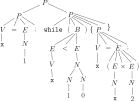
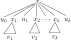
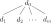
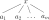
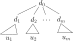

Parse Trees
Last time, we saw how to use context-free grammars to derive least solutions to polynomial systems of equations.
One of the exercises we did was a derivation of the grammatical correctness of a few different english sentences.
This was the grammar:
\[\begin{aligned}
S &\to N_P V_P N_P \\
N_P &\to BAN \mid BN \\
A &\to \texttt{nice} \mid \texttt{mean} \\
B &\to \texttt{the} \mid \texttt{a} \\
N &\to \texttt{boy} \mid \texttt{girl} \mid \texttt{dog} \\
V_P &\to \texttt{likes} \mid \texttt{hates}
\end{aligned}\]
In this context-free grammar, the variables all mean something: \(S\) stands for "sentence", \(N_P\) stands for "noun phrase", \(A\) stands for "adjective", \(B\) for "article", \(N\) for "noun", and \(V_P\) for "verb".
This makes the derivations a bit opaque, and not really how we build sentences in our heads.
The reason they are opaque is that the don't build the sentence in a way that is informed by the semantics of the sentence (what the sentence means).
This is more clearly seen in arithmetic expressions, which have their own grammar and meanings.
This becomes a little clearer when a notion of evaluation is introduced, like in arithmetic.
(Arithmetic Expressions)
In the following grammar, the variable \(E\) derives the language \(\mathit{ArExp}\) of
arithmetic expressions.
\[\begin{aligned}
E &\to
N
\mid (E + E)
\mid (E \times E)
\mid (E - E)
\mid (E / E) \\
N &\to 0 \mid 1 \mid 2 \mid 3 \mid 4 \mid 5 \mid 6 \mid 7 \mid 8 \mid 9 \mid NN
\end{aligned}\]
Let's call this grammar \(\mathcal G_{\mathbb N} = (X, A, R)\).
Above, \[
A = \big\{ (, ), +, \times, -, /, 0,1,2,3,4,5,6,7,8,9 \big\}
\]
because these are all the symbols we needed to form the monomial expressions above.
For a first example of an arithmetic expression, let's derive:
\[\begin{aligned}
E
&\Rightarrow (E + E) \\
&\Rightarrow (N + E) \\
&\Rightarrow (N + (E \times E)) \\
&\Rightarrow (N + (E \times N)) \\
&\Rightarrow (N + (N \times N)) \\
&\Rightarrow (NN + (N \times N)) \\
&\Rightarrow (9N + (N \times N)) \\
&\Rightarrow (90 + (N \times N)) \\
&\Rightarrow (90 + (NN \times N)) \\
&\Rightarrow (90 + (1N \times N)) \\
&\Rightarrow (90 + (10 \times N)) \\
&\Rightarrow (90 + (10 \times 2))
\end{aligned}\]
This tells us that \((90 + (10 \times 2)) \in \mathit{ArExp}\).
But of course, this derivation could have happened in many different ways; we could have changed the first \(N\) to an \(NN\) much earlier, or changed the second \(E\) in the first step to an \((E \times E)\) right away.
The following diagram condenses all of the different ways this expression could be formed into a single tree:

A parse tree for \((90 + (10 \times 2))\).
This is called a
parse tree for the arithmetic expression \((90 + (10 \times 2))\), the word "parse" here being used in the literal sense.
This tree might seem opaque at first, but if you read all of the
leaves of the tree left-to-right, then you recover the expression that formed the tree to begin with.

How to read the parse tree for \((90 + (10 \times 2))\).
(Arithmetic is Not Regular)
Prove that the language of arithmetic expressions \(\mathit{ArExp} \subseteq A^*\), derived from \(E\) in the grammar \(\mathcal G = (X, A, R)\) below
\[\begin{aligned}
E &\to
N
\mid (E + E)
\mid (E \times E)
\mid (E - E)
\mid (E / E) \\
N &\to 0 \mid 1 \mid 2 \mid 3 \mid 4 \mid 5 \mid 6 \mid 7 \mid 8 \mid 9 \mid NN
\end{aligned}\]
where the alphabet is
\[
A = \big\{ (, ), +, \times, -, /, 0,1,2,3,4,5,6,7,8,9 \big\}
\]
is not regular.
Look at the balanced parentheses example again: If you start deriving
\[
E \Rightarrow (E + E) \Rightarrow ((E + E) + E) \Rightarrow (((E + E) + E) + E) \Rightarrow \cdots
\]
what's accumulating on the left-hand side?
Here is the formal definition of what a parse tree consists of.
(Parse Tree)
A
tree \((N, \downarrow, d_0)\) consists of
- a set \(N\) of nodes
- a root node \(d_0 \in N\)
- a direct-descendent relation that relates nodes to tuples of nodes, i.e., \(d \downarrow (d_1, \dots, d_n)\)
satisfying three extra conditions:
If \(d \downarrow (d_1, \dots, d_n)\), we will say that each \(d_i\) is a
child of \(d\), and that \(d\) is the
parent of \(d_i\).
We will also use the notation \(d \downarrow d_i\) (the \(d_i\) is not written as a tuple now) to say that \(d_i\) is a child of \(d\).
The three conditions defining a tree are
- every node has at most one parent (i.e., if \(d \downarrow d_i\) and \(d' \downarrow d_i\), then \(d = d'\))
- the root node \(d_0\) has no parent
- the root node \(d_0\) is an ancestor of every node, i.e., \(d_0 \downarrow^* d\) for all \(d \in N\)
A
leaf of \(T\) is a node \(d \in N\) with no children, i.e., such that \(d \downarrow ()\).
Let \(X\) be a set of variables and \(A\) an alphabet.
A labelled tree \((N, \downarrow, d_0, l)\) (with labels in \(\{\varepsilon\} \cup X \cup A\)) consists of a tree \((N, \downarrow, d_0)\) and a function \(l \colon N \to \{\varepsilon\} \cup X \cup A\) that labels the nodes of \(T\).
Given a grammar \(\mathcal G = (X, A, R)\), a variable \(x \in X\), and a word \(w \in A^*\), a parse tree for \(w\) in \(\mathcal G\) at \(x\) is a labelled tree \((N, \downarrow, d_0, l)\) where \(l \colon N \to \{\varepsilon\} \cup X \cup A\), and
- the root note is labelled by \(x\), i.e., \(l(d_0) = x\)
- if the label of a node \(d\) is a letter in \(A\) or \(\varepsilon\), i.e., \(l(d) \in \{\varepsilon\} \cup A\), then \(d\) is a leaf
- if the label of a node \(d\) is a variable \(y \in X\), i.e., \(l(d) = y \in X\), then there are nodes \(d_1, \dots, d_n \in N\) such that
- \(d \downarrow (d_1, \dots, d_n)\)
- there is a rewrite rule \(x \to_R b_1 \cdots b_n\) for some \(b_1,\dots, b_n \in X \cup A\) such that \(l(d_i) = b_i\) for each \(i = 1, \dots, n\)
- the labels of the leaves of the tree spell out \(w\) from left to right.
If there is a parse tree for \(w\) in \(\mathcal G\) at \(x\), we say that \(x\)
yields \(w\).
The
language yielded by \(x\) is the language \(\mathcal L_{yield}(\mathcal G, x) \subseteq A^*\) consisting of all words yileded by \(x\) in \(\mathcal G\).
Agonizing over the technical definition of parse tree is not so educational, so I encourage you to forget it for now and focus on the pictures, since those really convey what the technical definition is trying to capture:
in the example, the root of the tree, labelled \(E\), branched into \((\), \(E\), \(+\), \(E\), and \()\), in that order.

The reason this was a valid part of the tree for the grammar and variable deriving arithmetic expressions was because of the rewrite rule
\[
E \to (E + E)
\]
in that grammar.
(Starting with Abstract Parsing)
Consider the grammar below, where \(X = \{x,y\}\) and \(A = \{a,b\}\).
\[\begin{aligned}
x &\to xy \mid b \\
y &\to ya \mid ab
\end{aligned}\]
Draw parse trees for the following words in this grammar (from \(x\)):
- \(bab\)
- \(b\)
- \(babab\)
- \(baba\)
(English Grammar Yet Again)
Recall the grammar \(\mathcal G\) below:
\[\begin{aligned}
S &\to N_P V_P N_P \\
N_P &\to BAN \mid BN \\
A &\to \texttt{nice} \mid \texttt{mean} \\
B &\to \texttt{the} \mid \texttt{a} \\
N &\to \texttt{boy} \mid \texttt{girl} \mid \texttt{dog} \\
V_P &\to \texttt{likes} \mid \texttt{hates}
\end{aligned}\]
Draw parse trees for the sentences you derived last time derivable from the grammar.
- \(\texttt{the nice girl likes the mean dog}\)
- \(\texttt{the boy likes the nice boy}\)
- \(\texttt{the mean boy hates the dog}\)
(Forming More Sentences)
Add new nouns, verbs, and variables for verbs (as opposed to verb phrases), adverbs, and plural nouns, and so on, to the sentence grammar \(\mathcal G\) above to derive the sentence \[
\texttt{colorless green ideas sleep furiously}
\]
(Agonizing over the Technical Definition of Tree)
Write down the explicit definition of a labelled tree \((N, \downarrow, d_0, l)\) that can be draw to look like the first tree in the Arithmetic Expressions example.
In other words, what are \(N, \downarrow, d_0, l\)?
Parse trees, thankfully, are enough to determine derivability.
(Parsing is Deriving)
Let \(\mathcal G\) be a context-free grammar and \(x\) be a variable of \(\mathcal G\).
Then for any word \(w \in A^*\), \(w\) is yielded by \(x\) if and only if \(w\) is derived from \(x\).
Formally,
\[
\mathcal L_{yield}(\mathcal G, x) = \mathcal L(\mathcal G, x)
\]
A proof can be found at the end of the page.
Coding Languages via Grammars
Grammars are widely used in the design of programming languages, although they usually appear in Backus-Naur Form, which is a special format of context-free grammar (we won't be convering it, but it's interesting to read about).
You will recognize the next two examples, and we might see the third one later on.
(Regular Expressions as Code)
Regular expressions themselves can be derived from a context-free grammar.
Starting with a base alphabet, \(A_{base} = \{0, 1\}\) (or \(\{a,b\}\) or whatever), we can set our total alphabet to be
\[
A = A_{base} \cup \{~\mathtt{\emptyset}, \mathtt{\varepsilon}, (, ), +, \cdot, ^*~\}
\]
(here we are using a slightly different font for \(\mathtt{\varepsilon}\)
the symbol and \(\varepsilon\)
the empty word, and similarly for \(\emptyset\)).
Then the following grammar \(\mathcal G_{REGEX}\) derives the language of regular expressions
as strings of symbols.
\[\begin{aligned}
E &\to \emptyset \mid \varepsilon \mid 0 \mid 1 \mid (E + E) \mid (E \cdot E) \mid (E)^*
\end{aligned}\]
(Here, you can replace \(0,1\) with whatever other base alphabet you want to use.)
Derive and draw a parse tree for each of the following regular expressions from \(E\).
- \((\mathtt{\emptyset} + \mathtt{\varepsilon})\)
- \(((a \cdot b) \cdot (b \cdot a))\)
- \((a + (a\cdot (a)^*))\)
(The WHILE Language)
In this exercise, we design a coding language, called \(\mathit{WHILE}\), using a context-free grammar.
The alphabet for the language, \(A\), is the entire ASCII table, since all of those symbols might appear in our blocks of code.
The grammar for the \(\mathit{WHILE}\) language \(\mathcal G_{WHILE}\) looks like this:
\[\begin{aligned}
\textit{(programs)} &&
P &\to
V = E;
\mid \mathtt{if}~(B)~\{P\}~\mathtt{else}~\{P\}
\mid \mathtt{while}~(B)~\{P\}
\mid PP
\mid \varepsilon \\
\textit{(variables)} &&
V &\to \mathtt{a} \mid \mathtt{b} \mid \mathtt{c} \mid \cdots \mid \mathtt{z} \mid VV\\
\textit{(Boolean tests)} &&
B &\to E == E \mid E < E \mid \mathtt{not}~B \mid B~\mathtt{and}~B \mid B~\mathtt{or}~B \\
\textit{(arithmetic)} &&
E &\to
N
\mid V
\mid (E + E)
\mid (E \times E)
\mid (E - E)
\mid (E / E) \\
\textit{(numbers)} &&
N &\to 0 \mid 1 \mid 2 \mid 3 \mid 4 \mid 5 \mid 6 \mid 7 \mid 8 \mid 9 \mid NN
\end{aligned}\]
The variables of the grammar are \(P, V, B, E, N\), which stand for the different parts of code as they are listed next to the rewrite rules above.
-
Consider the following parse tree:

What block of code is this a parse tree for?
-
Use the \(\mathit{WHILE}\) coding language to write a block of code that calculates the sum \(1 + 2 + \cdots + 2025\).
Write down a parse tree for this program.
The following example is an important historical one, and comes from early papers of Alonzo Church.
It deals with blocks of code in a language called the \(\lambda\)-calculus.
Most programming languages support \(\lambda\) terms as function abstractions, so you might even be familiar with this kind of program.
If not, and if it seems like the example is old, then it's worth noting that it is indeed very old.
But don't underestimate it!
The \(\lambda\)-calculus is the foundation on which all functional programming languages are built.
This example walked so that Haskell could run! Pun intended!
(The Grammar of \(\lambda\)-Terms)
The
language of \(\lambda\)-terms, \(\lambda\mathit{Term}\), is derived by the variable \(T\) in the grammar \(\mathcal G_\lambda\) below:
\[\begin{aligned}
T &\to V \mid (T \circ T) \mid (\lambda V.T) \\
V &\to \mathtt{a} \mid \mathtt{b} \mid \mathtt{c} \mid \cdots \mid \mathtt{z} \mid VV\\
\end{aligned}\]
Derive the following \(\lambda\)-terms from \(T\) in the grammar \(\mathcal G_{\lambda}\) and draw their parse trees.
- \((\mathtt{x} \circ \mathtt{a})\)
- \(((\lambda \mathtt{x}.\mathtt{x}) \circ \mathtt a)\)
- \((\lambda \mathtt{func}.(\lambda \mathtt{inp}.(\mathtt{func} \circ \mathtt{inp})))\)
The proof uses an important idea, left-first derivations, which are a kind of procedural way of going between parse trees and derivations in an unambiguous manner.
This is important because not every word derived from a grammar has a unique parse tree.
Intuitively, in a left-most derivation, only the left-most variable gets rewritten in each step.
(Left-most Derivation)
Let \(\mathcal G\) be a grammar with a variable \(x\), .
Let \(\mu_0\) be a monomial expression.
Then a rewrite \(\mu_0 \Rightarrow \mu_1\) is called a
left-most rewrite if there is a word \(w \in A^*\), a monomial expression \(\mu'\), and a rewrite rule \(x \to \nu\) such that
- \(\mu_0 = wx\mu'\)
- \(\mu_2 = w\nu\mu'\)
Now let \(w \in A^*\) and consider a derivation
\[
x = \mu_0 \Rightarrow \mu_1 \Rightarrow \mu_2 \Rightarrow \cdots \Rightarrow \mu_n \Rightarrow w
\]
in \(\mathcal G\).
We say that this derivation is a
left-most derivation if every step in the derivation \(\mu_{i} \Rightarrow \mu_{i+1}\) is obtained from a left-most rewrite.
Left-most derivations are not necessarily unique, for kind of dumb reasons, but they are close enough.
(Lefty-Loosey)
Consider the following grammar:
\[\begin{aligned}
x &\to y \mid a \mid \varepsilon \\
y &\to x \mid b \mid \varepsilon
\end{aligned}\]
Exhibit a word that has two distinct left-most derivations from \(x\) (and write those derivations down).
It is worth taking a moment to convince yourself of the following statement.
(Left-most Derivations)
Let \(\mathcal G\) be a grammar with a variable \(x\), and let \(w \in A^*\).
If \(w\) has a derivation from \(x\), then \(w\) has a left-most derivation from \(x\).
(Left On Your Own)
Prove the Left-most Derivations lemma.
Consider a derivation \(x \Rightarrow \mu_1 \Rightarrow \mu_2 \Rightarrow \cdots \Rightarrow w\).
In each step, you replace a variable with a monomial expression.
Why not just rearrange this so that the left variable substitutions happen first?
(Try a proof by induction on the number of rewrites in the derivation.)
(of the Parsing is Deriving Theorem)
Let's start by showing that \(\mathcal L(\mathcal G, x) \subseteq \mathcal L_{yield}(\mathcal G, x)\).
Let \(w \in \mathcal L(\mathcal G, x)\).
Then by the Left-most Derivations lemma there is a left-most derivation
\[
x \Rightarrow \mu_1 \Rightarrow \mu_2 \Rightarrow \cdots \Rightarrow \mu_m \Rightarrow w \hspace{4em}(*)
\]
We proceed by induction on the length of the derivation \(m\) above.
In the base case, if \(m = 0\), then \(x \Rightarrow w\), meaning that there is a rewrite rule \(x \to w\) in \(\mathcal G\).
Then a parse tree for \(w\) in \(\mathcal G\) at \(x\) is
where \(w = a_1\cdots a_k\).
This handles the base case.
In the induction step, we assume that every left-most derivation of length strictly less than \(m\) has a corresponding parse tree.
Now let \(\mu_1 = u_0 x_1 u_1 x_2 \cdots u_k x_k\) in \((*)\) for some words \(u_i \in A^*\) and variables \(x_i \in X\).
We obtain the first level of our parse tree this way.
Our goal is to obtain the whole parse tree from the following picture:

Since the derivation is a left-most derivation, the derivation that picks up after the initial step of \((*)\) is obtained from a left-most derivation \(x_1 \Rightarrow^* v_1\).
By the induction hypothesis, we obtain the subtree of the parse tree above rooted at \(x_1\).
Now move from left to right in the tree depicted, and use the induction hypothesis to construct the rest of the subtrees representing parse trees from each of \(x_2, \dots x_k\).
Above, \(w = u_0v_1 u_1 \cdots v_nu_n\), so we have just built a parse tree for \(w\) at \(x\).
This shows that \(w \in \mathcal L_{yield}(\mathcal G, x)\), like we wanted.
Now let's show that \(\mathcal L_{yield}(\mathcal G, x) \subseteq \mathcal L(\mathcal G, x)\).
We aren't going to start this in the standard way, just because it makes things a lot easier if we have the following fact up our sleeve:
Claim 1.
Let \(w \in A^*\), and let \((T, \downarrow, d_0, l)\) be a parse tree for \(w\) in \(\mathcal G\) at \(x\).
Then \(w\) is derivable from \(x\) in \(\mathcal G\).
(of Claim 1)
We proceed via a strong induction on the
height of the tree \((T, \downarrow, d_0)\); that is, the number of nodes in the longest chain of descendent relations \(d_0 \downarrow d_1 \downarrow d_2 \downarrow \cdots \downarrow d_n\) (how many layers the tree has).
It is worth noting that there are two base cases: in the forst base case, the height of \((T, \downarrow, d_0)\) is \(1\), because we are not allowing for the empty tree (because \(d_0 \in T\)).
But this would mean that \(l(d_0) = x\), which is not a word.
In this case, the claim is vaccuously true.
In the second base case, the height of the tree is \(2\), which means that the tree consists of two layers:

With its labelling, \(l(d_0) = x\) (by definition of parse tree) and \(l(d_i) = a_i \in A\) for each \(i = 1, \dots, m\), because the leaves of the parse tree must be letters.
Furthermore, because the tree yields \(w\), we must have \(w = a_1\cdots a_m\).

By definition of parse tree, there is a rewrite rule \(x \to a_1\cdots a_m\) in \(\mathcal G\), and \(w = a_1 \cdots a_m\).
Therefore, \(x\) derives \(w\) in \(\mathcal G\), i.e., \(w \in \mathcal L(\mathcal G, x)\).
Now let's do the induction step.
Given a number \(n > 2\), assume that Claim 1 is true for any tree with height \(k < n\), and let the height of \((T, \downarrow, d_0, l)\) be \(n\).
Since \(n > 2\), there are nodes \(d_i\) with \(d_0 \downarrow (d_1, \dots, d_m)\) corresponding to a derivation rule \(x \to l(d_1)~l(d_2)~\cdots~l(d_m)\).
This allows us to consider \(m\) differen subtrees of height strictly less than \(n\): the subtrees rooted at \(d_1\), \(d_2\), up to \(d_n\), respectively.
Since the whole tree yields \(w\), each of these subtrees must yield subwords of \(w\), altogether adding up to \(w\) (note that we are allowing \(d_i\) to be a leaf here, in which case it represents a single letter of \(w\)).
That is, if we let \(u_i\) be the subword of \(w\) yielded by the subtree rooted at \(d_i\) for each \(i\), then \(w = u_1 \cdots u_m\).

This is where we use the induction hypothesis.
Let \(l(d_i) = y_i\) for each \(i\).
Since the height of the tree rooted at \(d_i\) is strictly less than \(n\) (it doesn't include the root layer), there is a derivation
\[
y_i \Rightarrow \mu_{i1} \Rightarrow \cdots \Rightarrow \mu_{ik_i} \Rightarrow u_{i}
\]
in \(\mathcal G\) for each \(i\).
Putting all of this together for each \(i\), we obtain the following derivation:
\[\begin{aligned}
x
&\Rightarrow y_1 y_2\cdots y_m && \text{derive \(u_1\) from \(y_1\)}\\
&\Rightarrow \mu_{11} y_2\cdots y_m \\
&\hspace{2em}\vdots \\
&\Rightarrow \mu_{1k_1} y_2\cdots y_m \\
&\Rightarrow u_1 y_2\cdots y_m && \text{now derive \(u_2\) from \(y_2\)}\\
&\Rightarrow u_1 \mu_{21} \cdots y_m \\
&\Rightarrow u_1 \mu_{22} \cdots y_m \\
&\hspace{2em}\vdots \\
&\Rightarrow u_1 u_2 \cdots y_m && \text{finally, derive \(u_m\) from \(y_m\)}\\
&\Rightarrow u_1 u_2 \cdots \mu_{m1} \\
&\hspace{2em}\vdots \\
&\Rightarrow u_1 u_2 \cdots u_m \\
&= w\\
\end{aligned}\]
We have just derived \(w\) from \(x\), which is what we were trying to do.
Now let's use Claim 1 to prove that \(\mathcal L_{yield}(\mathcal G, x) \subseteq \mathcal L(\mathcal G, x)\).
Let \(w \in \mathcal L_{yield}(\mathcal G, x)\).
Then there is a parse tree for \(w\) in \(\mathcal G\) from \(x\) that yields \(w\).
By Claim 1, there must also be a derivation of \(w\) from \(x\).
Therefore, \(w \in \mathcal L(\mathcal G, x)\).